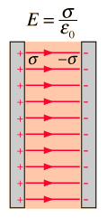
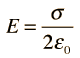
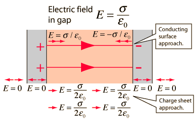

Electric Field: Parallel Plates
If oppositely charges parallel conducting plates are treated like infinite planes (neglecting fringing), then Gauss' law can be used to calculate the electric field between the plates. Presuming the plates to be at equilibrium with zero electric field inside the conductors, then the result from a charged conducting surface can be used:
|

|
This is also consistent with treating the charge layers as two charge sheets with electric field
 in both directions.

|
|
Index
Electric field concepts |